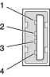

The Xserve computer has two external Universal Serial Bus (USB) ports on the back. The USB ports can be used for connecting a keyboard and mouse as well as additional I/O devices such as printers, scanners, and low-speed storage devices.
Each USB port is connected to a separate USB root hub, allowing both USB ports to support 12 Mbps devices at the same time with no degradation of their performance.
For more information about USB on Macintosh computers, please refer to Apple Computer’s Mac OS USB DDK API Reference and the other sources listed in “USB Interface”.
USB Connectors
The USB ports use USB Type A connectors, which have four pins each. Two of the pins are used for power and two for data. Figure 3-1 shows the connector and Table 3-1 shows the signals and pin assignments.
Figure 3-1 USB connector
Table 3-1 Signals on the USB connector
| Pin | Signal name | Description |
|---|---|---|
| 1 | VCC | +5 VDC |
| 2 | D– | Data – |
| 3 | D+ | Data + |
| 4 | GND | Ground |
The Xserve provides power for the USB ports at 5 V and up to 500 mA on each port. The ports share the same power supply; a short circuit on one will disable both ports until the short has been removed.
The USB ports support both low-speed and high-speed data transfers, at 1.5 Mbits per second and 12 Mbits per second, respectively. High-speed operation requires the use of shielded cables.
The Macintosh system software supports all four data transfer types defined in the USB specification.